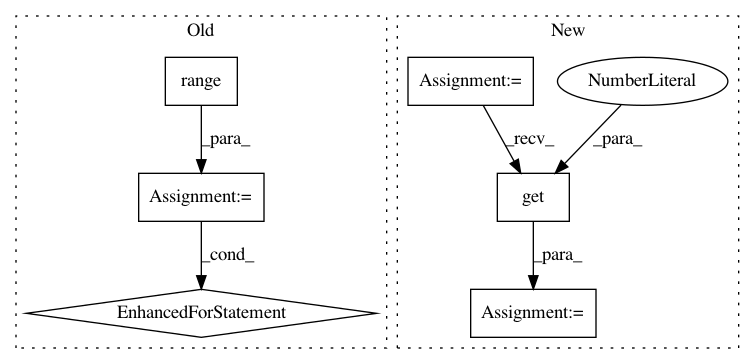

6d3e4bdc22cc89fb7ecf188ccf0479632012026f,deeppavlov/models/evolution/check_binary_mask.py,,get_graph_and_plot,#Any#Any#Any#Any#,97
Before Change
pos = {}
for i in range(total_nodes):
for j in range(total_nodes):
if binary_mask[i, j] == 1:
dg.add_edge(i, j)
pos[i] = 2. * np.array(number_to_type_layer(i, n_types))[::-1]
plt.figure(figsize=(12, 12))
nx.draw(dg, pos, node_color="b", node_size=7000, alpha=0.3)
After Change
dg = get_digraph_from_binary_mask(nodes, binary_mask)
pos = {}
val_map = {}
sources, sinks = find_sources_and_sinks(dg)
for i in range(total_nodes):
pos[i] = 2. * np.array(number_to_type_layer(i, n_types))[::-1]
if i in sources:
val_map[i] = 1.
elif i in sinks:
val_map[i] = 0.5
else:
val_map[i] = 0.
plt.figure(figsize=(12, 12))
values = [val_map.get(node, 0.25) for node in nodes]
nx.draw(dg, pos, cmap=plt.get_cmap("jet"), node_color=values, node_size=7000, alpha=0.3)
nx.draw_networkx_labels(dg, pos, nodes, font_size=18)
In pattern: SUPERPATTERN
Frequency: 3
Non-data size: 6
Instances
Project Name: deepmipt/DeepPavlov
Commit Name: 6d3e4bdc22cc89fb7ecf188ccf0479632012026f
Time: 2018-04-18
Author: dilyara.rimovna@gmail.com
File Name: deeppavlov/models/evolution/check_binary_mask.py
Class Name:
Method Name: get_graph_and_plot
Project Name: deepmipt/DeepPavlov
Commit Name: 4fca544205a55010e8959bb760aece5be80dc3a5
Time: 2018-06-26
Author: dilyara.rimovna@gmail.com
File Name: deeppavlov/models/evolution/check_binary_mask.py
Class Name:
Method Name: get_graph_and_plot
Project Name: ray-project/ray
Commit Name: b71c912da70e307ff1a9f07c7ca277a727306126
Time: 2020-07-05
Author: rliaw@berkeley.edu
File Name: python/ray/tune/examples/mlflow_example.py
Class Name:
Method Name: easy_objective